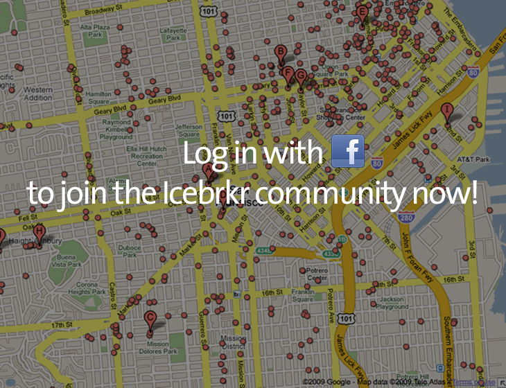

Connect with people in your area.
With Icebrkr, you can easily find and screen people in your local area that share your interests and are looking to meet up with people like you.

Your location is:
